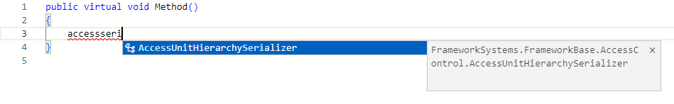
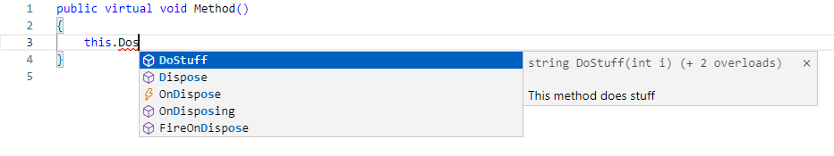
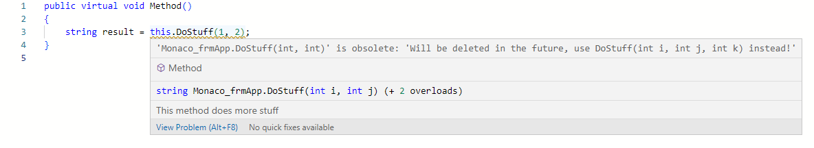
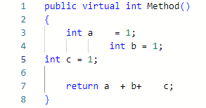
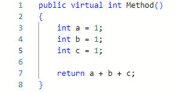

C# Editor
Der C#-Editor kommt unter anderem bei Properties, Methoden und Code-Klassen zum Einsatz. In den folgenden Kapiteln werden einige Features näher betrachtet und erläutert.
Bracket Colorization
Ein generelles Problem in C# ist das Auffinden von zusammenhängenden Klammern im Code. Besonders bei der Programmierung von komplexeren Ausdrücken, wie z.B. mathematische Berechnungen oder verschachtelte Bedingungen.
Bracket Guides helfen hierbei, wenn z.B. zu einer öffnenden Klammer die schließende Klammer gesucht wird. Um aber den Gesamtüberblick über die Klammersetzung vor allem in einzeiligen Ausdrücken besser behalten zu können, bietet der C#-Editor zusätzlich die Bracket Colorization an.
Dieses Feature bedient sich an drei unterschiedlichen Farben und sorgt dafür, dass direkt aufeinander folgende Klammerpaare niemals die gleiche Farbe haben. Ein Beispiel für eine entsprechende Farbmarkierung der Klammern ist in der nachfolgenden Abbildung dargestellt.

Die Bracket Colorization wird auf die Klammerpaare (), {} und [] angewandt. Auch bei einer Mischung der Klammerarten in einem Ausdruck werden diese stets farblich getrennt.
IntelliSense
Der C# Editor bietet eine kontextabhängige IntelliSense an, die durch CRTL + SPACE oder durch verschiedene Trigger wie z.B. . geöffnet wird.

Camel-Case Filter
Die IntelliSense bietet einen Camel-Case Filter an, welcher die Ergebnisliste anhand der groß geschriebenen Teilwörter filtert.

Im Beispiel wird AUHS getippt (muss nicht zwingend groß geschrieben werden) und der erste Treffer ist der AccessUnitHierarchySerializer. Somit ist das Ausschreiben langer Symbolnamen in den meisten Fällen nicht nötig.
Word Filter
Der Word Filter sucht in der Ergebnisliste nach Teilwörtern.

Im Beispiel könnte ein Programmierer z.B. wissen, dass der Name der gesuchten Klasse mit Access beginnt und mit Serializer endet. Nach dem Tippen von accessseri findet der Filter den entsprechenden Eintrag und bietet den AccessUnitHierarchySerializer an.
Tooltip Toggle
Standardmäßig wird zusätzlich zur IntelliSense-Ergebnisliste auch der Tooltip für den derzeit ausgewählten Eintrag geöffnet. Für eine Methode werden hier z.B. weitere Informationen wie die Deklaration, Dokumentation oder die Anzahl der Überladungen angezeigt.

Bei geöffneter IntelliSense kann durch das wiederholte Drücken von CTRL + SPACE der Tooltip geschlossen bzw. geöffnet werden. Danach werden abhängig vom verfügbaren Platz nur noch die ersten Wörter der Tooltip-Information in der Ergebnisliste angezeigt.

Die Einstellung, ob der Tooltip angezeigt wird oder nicht, wird temporär am Editor zwischengespeichert. Wird der Editor neu geladen, wird grundsätzlich der Tooltip wieder angezeigt.
IntelliSense für Methoden
Methoden haben eine spezielle IntelliSense, welche in der Lage ist für alle etwaigen Überladungen, Parameter, sowie Rückgabewerte die entsprechende Dokumentation aufzubereiten.
Die Methoden-IntelliSense wird durch die Trigger ( und [ nach einem Methodennamen ausgelöst oder durch das Tippen von ,, wenn sich der Cursor in der Parameterliste einer Methodendeklaration befindet.

Im Beispiel existiert die Methode DoStuff in drei Ausführungen. Mit ArrowUp oder ArrowDown kann durch die Überladungen rotiert werden.
Kontextabhängig werden dann folgende Informationen angezeigt (wenn vorhanden):
- Die Deklaration der gerade ausgewählten Überladung
- Die XML-Dokumentation zum derzeit aktiven Parameter
- Die XML-Dokumentation zur Methode
- Die XML-Dokumentation zum Rückgabewert
IntelliSense für Code Snippets
Der C# Editor bietet eine eigene IntelliSense-Liste für die im Code Snippets Editor definierten Code Snippets.

Die Code Snippet IntelliSense kann über den Shortcut CTRL + J geöffnet werden.
Hover Tooltip & Diagnostics
Der C# Editor bietet eine breite Unterstützung für das Auffinden von etwaigen Fehlern im Code sowie das Anzeigen von Informationen zum Source Code.
Hover Tooltip
Befindet sich die Maus im Source Code über einem Symbol (z.B. Klasse, Property, Methode, usw.), so wird ein Tooltip mit allen kontextabhängigen Informationen zu diesem Symbol angezeigt.

Im Beispiel befindet sich der Mauszeiger (nicht vom Screenshot erfasst) über der Methode DoStuff.
Note
In manchen Editoren, wie z.B. der Anzeige des generierten Codes, ist diese Funktionalität deaktiviert.
Diagnostics
Beim Programmieren wird der Source Code kontinuierlich durch den Roslyn-Compiler geprüft. Werden Fehler oder Unstimmigkeiten entdeckt, so werden diese im Code markiert.

Im Beispiel ist die Methode DoStuff(int i, int j) als Obsolete markiert. Sie wird orange unterstrichen und der Hover Tooltip zeigt die entsprechende Information an.
Note
Fehler und Warnings haben im Hover Tooltip immer die höchste Priorität und werden als erstes angezeigt.
Note
In Editoren, die entweder den Status CheckedIn oder ReadOnly haben, werden keine Diagnostics ausgeführt.
Diagnostics Peeking
Befindet sich der Cursor auf einem markierten Fehler oder einer Warning im Code, kann mit den Shortcuts ALT + F8 vorwärts und SHIFT + ALT + F8 rückwärts durch diese gesprungen werden. Dabei wird die Gesamtzahl der sich im Code befindlichen Probleme angezeigt.

Code Formatting
Über den Shortcut SHIFT + ALT + F kann die Aktion Format Document ausgelöst werden. Diese formatiert den gesamten C# Code im Editor und sorgt für eine einheitliche Einrückung und Klammersetzung.
So wird aus folgendem Code

schön formatierter Code

Customize
Wen eine Methode aus dem Basis-Package im C# Editor geöffnet ist und die Möglichkeit besteht das Element (Form, Component, usw.) im aktuellen Package zu customizen, dann kann dies entweder über den Eintrag Customize im Kontextmenü oder über den Shortcut CTRL + T angestoßen werden.
Note
Die zu customizende Methode muss entweder mit virtual oder override deklariert sein.
Go To Definition
Der C# Editor erlaubt es über verschiedene Wege zur Definition eines Elements im Code zu springen.
Die einfachste Möglichkeit ist das Drücken der CTRL-Taste und das Bewegen der Maus über ein Wort im Code.

Im Hintergrund wird abgefragt, ob zu diesem Element überhaupt gesprungen werden kann. Im Beispiel befindet sich der Mauszeiger bei gedrückter CTRL-Taste über der Methode DoStuff.
Im Hover Tooltip erscheint nun die Information Click to open App.frmApp.DoStuff. Zusätzlich wird das Wort DoStuff im Code als blauer Link dargestellt. Dies signalisiert zusätzlich, dass nun durch einen Click mit der linken Maustaste zur Definition gesprungen werden kann.
Wenn sich der Cursor im Editor innerhalb des Wortes DoStuff befindet oder das gesamte Wort selektiert ist, so kann auch ohne Maus mit dem Shortcut CTRL + F12 oder über das Kontextmenü Go To Definition zur Definition gesprungen werden.
Note
Go To Definition funktioniert grundsätzlich mit Elementen (Methoden, Properties, usw.) aus Framework Studio, jedoch nicht mit Bibliotheken von Drittanbietern oder dem .NET Framework selbst.
Go To Base
Wenn eine überschriebene Methode im C# Editor geöffnet ist, die ihren Ursprung in einem Basis-Package hat, kann über den Eintrag Go To Base im Kontextmenü oder über den Shortcut CTRL + B zu dieser Basis gesprungen werden.
Compare With Base
Wenn eine überschriebene Methode im C# Editor geöffnet ist, kann über den Eintrag Compare With Base oder über den Shortcut CTRL + ALT + B der Diff Editor geöffnet werden und die überschriebene Methode mit deren Basis verglichen werden.
Method History Browser
Über den Eintrag Method History Browser im Kontextmenü oder über den Shortcut CTRL + SHIFT + M kann für die aktuell angezeigte Methode der Method History Browser aufgerufen werden.
Code Snippet Editor
Über den Eintrag Edit Code Snippets oder über den Shortcut CTRL + SHIFT + J kann der Code Snippet Editor geöffnet werden.